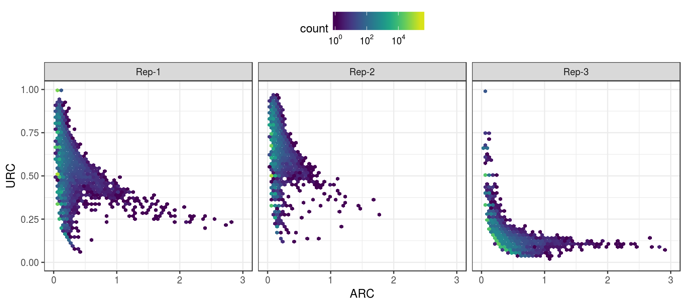
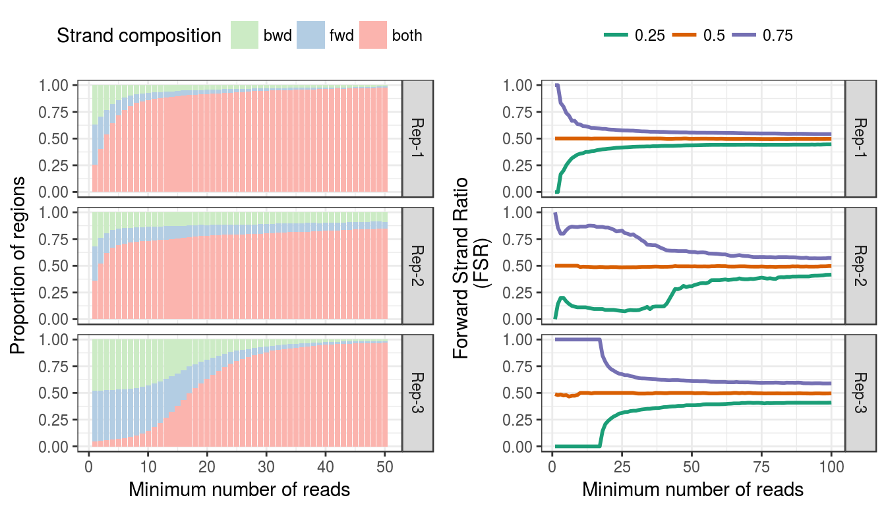
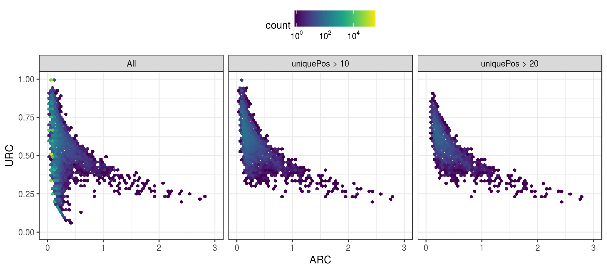
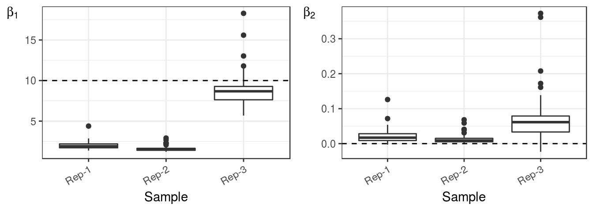
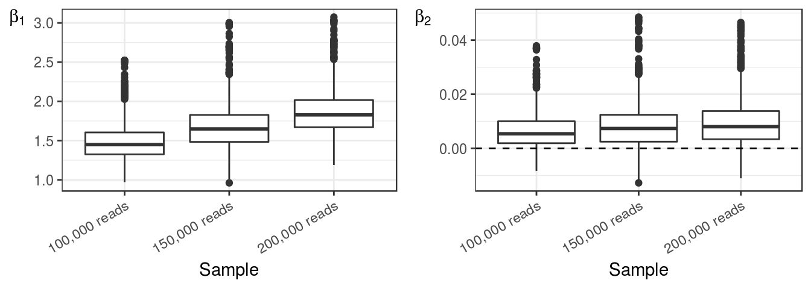

Rene Welch and Sündüz Keleş
Department of Statistics, University of Wisconsin-Madison
In this vignette, we provide a brief overview of the ChIPexoQual package. This package provides a statistical quality control (QC) pipeline that enables the exploration and analysis of ChIP-exo/nexus experiments. Additionally, we used the reads aligned to chr1 in the mouse liver ChIP-exo experiment (Serandour et al. 2013) to illustrate the use of the pipeline. To load the packages we use:
library(ChIPexoQual)
library(ChIPexoQualExample)ChIPexoQual takes a set of aligned reads from a ChIP-exo (or ChIP-nexus) experiment as input and performs the following steps:
We analyzed a larger collection of ChIP-exo/nexus experiments in (Welch et al. 2016) including complete versions of this samples.
The minimum input to use ChIPexoQual are the aligned reads of a ChIP-exo/nexus experiment. ChIPexoQual accepts either the name of the bam file or the reads in a GAlignments object:
files = list.files(system.file("extdata",
package = "ChIPexoQualExample"),full.names = TRUE)
basename(files[1])## [1] "ChIPexo_carroll_FoxA1_mouse_rep1_chr1.bam" ex1 = ExoData(file = files[1],mc.cores = 2L,verbose = FALSE)
ex1## ExoData object with 655785 ranges and 11 metadata columns:
## seqnames ranges strand | fwdReads revReads
## <Rle> <IRanges> <Rle> | <integer> <integer>
## [1] chr1 [3000941, 3000976] * | 2 0
## [2] chr1 [3001457, 3001492] * | 0 1
## [3] chr1 [3001583, 3001618] * | 0 2
## [4] chr1 [3001647, 3001682] * | 1 0
## [5] chr1 [3001852, 3001887] * | 1 0
## ... ... ... ... . ... ...
## [655781] chr1 [197192012, 197192047] * | 0 1
## [655782] chr1 [197192421, 197192456] * | 0 1
## [655783] chr1 [197193059, 197193094] * | 1 0
## [655784] chr1 [197193694, 197193729] * | 0 3
## [655785] chr1 [197194986, 197195021] * | 0 2
## fwdPos revPos depth uniquePos ARC
## <integer> <integer> <integer> <integer> <numeric>
## [1] 1 0 2 1 0.0555555555555556
## [2] 0 1 1 1 0.0277777777777778
## [3] 0 1 2 1 0.0555555555555556
## [4] 1 0 1 1 0.0277777777777778
## [5] 1 0 1 1 0.0277777777777778
## ... ... ... ... ... ...
## [655781] 0 1 1 1 0.0277777777777778
## [655782] 0 1 1 1 0.0277777777777778
## [655783] 1 0 1 1 0.0277777777777778
## [655784] 0 1 3 1 0.0833333333333333
## [655785] 0 1 2 1 0.0555555555555556
## URC FSR M A
## <numeric> <numeric> <numeric> <numeric>
## [1] 0.5 1 -Inf Inf
## [2] 1 0 -Inf -Inf
## [3] 0.5 0 -Inf -Inf
## [4] 1 1 -Inf Inf
## [5] 1 1 -Inf Inf
## ... ... ... ... ...
## [655781] 1 0 -Inf -Inf
## [655782] 1 0 -Inf -Inf
## [655783] 1 1 -Inf Inf
## [655784] 0.333333333333333 0 -Inf -Inf
## [655785] 0.5 0 -Inf -Inf
## -------
## seqinfo: 1 sequence from an unspecified genome; no seqlengths reads = readGAlignments(files[1],param = NULL)
ex2 = ExoData(reads = reads,mc.cores = 2L,verbose = FALSE)
identical(GRanges(ex1),GRanges(ex2))## [1] TRUEFor the rest of the vignette, we generate an ExoData object for each replicate:
files = files[grep("bai",files,invert = TRUE)] ## ignore index files
exampleExoData = lapply(files,ExoData,mc.cores = 2L,verbose = FALSE)To create the ARC vs URC plot proposed in (Welch et al. 2016), we use the ARC_URC_plot function. This function allows to visually compare different samples:
ARCvURCplot(exampleExoData,names.input = paste("Rep",1:3,sep = "-"))
This plot typically exhibits one of the following three patterns for any given sample. In all three panels we can observe two arms: the first with low Average Read Coefficient (ARC) and varying Unique Read Coefficient (URC); and the second where the URC decreases as the ARC increases. The first and third replicates exhibit a defined decreasing trend in URC as the ARC increases. This indicates that these samples exhibit a higher ChIP enrichment than the second replicate. On the other hand, the overall URC level from the first two replicates is higher than that of the third replicate, elucidating that the libraries for the first two replicates are more complex than that of the third replicate.
To create the FSR distribution and Region Composition plots suggested in Welch et. al 2016 (submitted), we use the FSR_dist_plot and region_comp_plot, respectively.
p1 = regionCompplot(exampleExoData,names.input = paste("Rep",1:3,
sep = "-"),depth.values = seq_len(50))
p2 = FSRDistplot(exampleExoData,names.input = paste("Rep",1:3,sep = "-"),
quantiles = c(.25,.5,.75),depth.values = seq_len(100))
gridExtra::grid.arrange(p1,p2,nrow = 1)
The left panel displays the Region Composition plot and the right panel shows the Forward Strand Ratio (FSR) distribution plot, both of which highlight specific problems with replicates 2 and 3. The Region Composition plot exhibits apparent decreasing trends in the proportions of regions formed by fragments in one exclusive strand. High quality experiments tend to show exponential decay in the proportion of single stranded regions, while for the lower quality experiments, the trend may be linear or even constant. The FSR distributions of both of replicates 2 and 3 are more spread around their respective medians. The rate at which the FSR distribution becomes more centralized around the median indicates the aforementioned lower enrichment in the second replicate and the low complexity in the third one. The asymmetric behavior of the second replicate is characteristic of low enrichment, while the constant values of replicate three for low minimum number of reads indicate that this replicate has islands composed of reads aligned to very few unique positions.
All the plot functions in ChIPexoQual allow a list or several separate ExoData objects. This allows to explore island subsets for each replicate. For example, to show that the first arm is composed of regions formed by reads aligned to few positions, we can generate the following plot:
ARCvURCplot(exampleExoData[[1]],
subset(exampleExoData[[1]],uniquePos > 10),
subset(exampleExoData[[1]],uniquePos > 20),
names.input = c("All", "uniquePos > 10", "uniquePos > 20"))
The last step of the quality control pipeline is to evaluate the linear model:
\[ \begin{align*} D_i = \beta_1 U_i + \beta_2 U_2 + \epsilon_i, \end{align*} \]
The distribution of the parameters of this model is built by sampling nregions regions (the default value is 1,000), fitting the model and repeating the process ntimes (the default value is 100). We visualize the distributions of the parameters with box-plots:
p1 = paramDistBoxplot(exampleExoData,which.param = "beta1", names.input = paste("Rep",1:3,sep = "-"))
p2 = paramDistBoxplot(exampleExoData,which.param = "beta2", names.input = paste("Rep",1:3,sep = "-"))
gridExtra::grid.arrange(p1,p2,nrow = 1)
Further details over this analysis are in Welch et. al 2016 (submitted). In short, when the ChIP-exo/nexus sample is not deeply sequenced, high values of \(\hat{\beta}_1\) indicate that the library complexity is low. In contrast, lower values correspond to higher quality ChIP-exo experiments. We concluded that samples with estimated \(\hat{\beta_1} \leq 10\) seem to be high quality samples. Similarly, samples with estimated \(\hat{\beta_2} \approx 0\) can be considered as high quality samples. The estimated values for these parameters can be accessed with the beta1, beta2, and param_dist methods. For example, using the median to summarize these parameter distributions, we conclude that these three replicates (in chr1) are high quality samples:
sapply(exampleExoData,function(x)median(beta1(x)))## [1] 1.903799 1.498470 8.677156 sapply(exampleExoData,function(x)median(-beta2(x)))## [1] 0.017131301 0.008937054 0.061447391For convenience, we added the function ExoDataSubsampling, that performs the analysis suggested by Welch et. al 2016 (submitted) when the experiment is deeply sequenced. To use this function, we proceed as follows:
sample.depth = seq(1e5,2e5,5e4)
exoList = ExoDataSubsampling(file = files[3],sample.depth = sample.depth,
verbose=FALSE)The output of ExoDataSubsampling is a list of ExoData objects, therefore its output can be used with any of the plotting functions to asses the quality of the samples. For example, using we may use paramDistBoxplot to get the following figures:
p1 = paramDistBoxplot(exoList,which.param = "beta1")
p2 = paramDistBoxplot(exoList,which.param = "beta2")
gridExtra::grid.arrange(p1,p2,nrow = 1)
We presented a systematic exploration of a ChIP-exo experiment and show how to use the QC pipeline provided in ChIPexoQual. ChIPexoQual takes aligned reads as input and automatically generates several diagnostic plots and summary measures that enable assessing enrichment and library complexity. The implications of the diagnostic plots and the summary measures align well with more elaborate analysis that is computationally more expensive to perform and/or requires additional imputes that often may not be available.
sessionInfo("ChIPexoQual")## R version 3.3.2 (2016-10-31)
## Platform: x86_64-pc-linux-gnu (64-bit)
## Running under: Ubuntu 14.04.4 LTS
##
## locale:
## [1] LC_CTYPE=en_US.UTF-8 LC_NUMERIC=C
## [3] LC_TIME=en_US.UTF-8 LC_COLLATE=en_US.UTF-8
## [5] LC_MONETARY=en_US.UTF-8 LC_MESSAGES=en_US.UTF-8
## [7] LC_PAPER=en_US.UTF-8 LC_NAME=C
## [9] LC_ADDRESS=C LC_TELEPHONE=C
## [11] LC_MEASUREMENT=en_US.UTF-8 LC_IDENTIFICATION=C
##
## attached base packages:
## character(0)
##
## other attached packages:
## [1] ChIPexoQual_0.99.12
##
## loaded via a namespace (and not attached):
## [1] backports_1.0.4 Hmisc_4.0-0
## [3] AnnotationHub_2.6.4 plyr_1.8.4
## [5] lazyeval_0.2.0 splines_3.3.2
## [7] BiocParallel_1.8.1 GenomeInfoDb_1.10.1
## [9] ggplot2_2.2.0 digest_0.6.10
## [11] BiocInstaller_1.24.0 ensembldb_1.6.2
## [13] htmltools_0.3.5 viridis_0.3.4
## [15] rsconnect_0.6 magrittr_1.5
## [17] memoise_1.0.0 BSgenome_1.42.0
## [19] cluster_2.0.5 ChIPexoQualExample_0.99.3
## [21] Biostrings_2.42.0 methods_3.3.2
## [23] pkgdown_0.1.0.9000 colorspace_1.3-1
## [25] dplyr_0.5.0 callr_1.0.0.9000
## [27] crayon_1.3.2 RCurl_1.95-4.8
## [29] jsonlite_1.1 hexbin_1.27.1
## [31] graph_1.52.0 roxygen2_5.0.1
## [33] survival_2.40-1 VariantAnnotation_1.20.1
## [35] utils_3.3.2 gtable_0.2.0
## [37] zlibbioc_1.20.0 XVector_0.14.0
## [39] pkgbuild_0.0.0.9000 BiocGenerics_0.20.0
## [41] scales_0.4.1 DBI_0.5-1
## [43] graphics_3.3.2 Rcpp_0.12.8
## [45] xtable_1.8-2 htmlTable_1.7
## [47] foreign_0.8-67 Formula_1.2-1
## [49] stats4_3.3.2 base_3.3.2
## [51] httr_1.2.1 getopt_1.20.0
## [53] RColorBrewer_1.1-2 acepack_1.4.1
## [55] XML_3.98-1.5 nnet_7.3-12
## [57] labeling_0.3 reshape2_1.4.2
## [59] AnnotationDbi_1.36.0 stats_3.3.2
## [61] munsell_0.4.3 biocViews_1.42.0
## [63] tools_3.3.2 RSQLite_1.1
## [65] devtools_1.12.0.9000 broom_0.4.1
## [67] evaluate_0.10 stringr_1.1.0
## [69] yaml_2.1.14 highlight_0.4.7
## [71] grDevices_3.3.2 knitr_1.15.1
## [73] purrr_0.2.2 RBGL_1.50.0
## [75] nlme_3.1-128 whisker_0.3-2
## [77] mime_0.5 xml2_1.0.0.9001
## [79] biomaRt_2.30.0 BiocStyle_2.2.1
## [81] curl_2.3 interactiveDisplayBase_1.12.0
## [83] testthat_1.0.2 tibble_1.2
## [85] stringi_1.1.2 GenomicFeatures_1.26.0
## [87] desc_1.0.1 lattice_0.20-34
## [89] Matrix_1.2-7.1 psych_1.6.9
## [91] BiocCheck_1.10.0 RUnit_0.4.31
## [93] optparse_1.3.2 data.table_1.9.8
## [95] bitops_1.0-6 httpuv_1.3.3
## [97] rtracklayer_1.34.1 GenomicRanges_1.26.1
## [99] R6_2.2.0 latticeExtra_0.6-28
## [101] gridExtra_2.2.1 IRanges_2.8.1
## [103] codetools_0.2-15 dichromat_2.0-0
## [105] assertthat_0.1 pkgload_0.0.0.9000
## [107] SummarizedExperiment_1.4.0 rprojroot_1.1
## [109] withr_1.0.2 GenomicAlignments_1.10.0
## [111] Rsamtools_1.26.1 mnormt_1.5-5
## [113] S4Vectors_0.12.0 datasets_3.3.2
## [115] parallel_3.3.2 grid_3.3.2
## [117] rpart_4.1-10 tidyr_0.6.0
## [119] rmarkdown_1.2 git2r_0.16.0
## [121] biovizBase_1.22.0 Biobase_2.34.0
## [123] shiny_0.14.2Serandour, Aurelien, Brown Gordon, Joshua Cohen, and Jason Carroll. 2013. “Development of and Illumina-Based ChIP-Exonuclease Method Provides Insight into FoxA1-DNA Binding Properties.” Genome Biology.
Welch, Rene, Dongjun Chung, Jeffrey Grass, Robert Landick, and Sündüz Keleş. 2016. “Data Exploration, Quality Control, and Statistical Analysis of ChIP-Exo/Nexus Experiments.” Submitted.